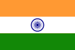

India is a country in South Asia. It is the seventh-largest country by area, the second-most populous country, and the most populous democracy in the world. Bounded by the Indian Ocean on the south, the Arabian Sea on the southwest, and the Bay of Bengal on the southeast, it shares land borders with Pakistan to the west; China, Nepal, and Bhutan to the north; and Bangladesh and Myanmar to the east. In the Indian Ocean, India is in the vicinity of Sri Lanka and the Maldives; its Andaman and Nicobar Islands share a maritime border with Thailand and Indonesia.

USA
The United States of America (USA),, is a country comprising 50 states, a federal district, five major self-governing territories, and various possessions. At 3.8 million square miles (9.8 million km2), the United States is the world's third or fourth largest country by total area and is slightly smaller than the entire continent of Europe's 3.9 million square miles (10.1 million km2). With a population of over 327 million people, the U.S. is the third most populous country. The capital is Washington, D.C., and the most populous city is New York City. Most of the country is located contiguously in North America between Canada and Mexico.
Spain
Spain is a country mostly located in Europe. Its continental European territory is situated on the Iberian Peninsula. Its territory also includes two archipelagoes: the Canary Islands off the coast of Africa, and the Balearic Islands in the Mediterranean Sea. The African enclaves of Ceuta, Melilla, and Peñón de Vélez de la Gomera make Spain the only European country to have a physical border with an African country (Morocco). Several small islands in the Alboran Sea are also part of Spanish territory. The country's mainland is bordered to the south and east by the Mediterranean Sea except for a small land boundary with Gibraltar; to the north and northeast by France, Andorra, and the Bay of Biscay; and to the west and northwest by Portugal and the Atlantic Ocean.